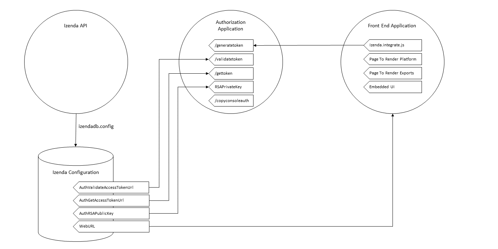

Deployment Mode 1: Key Components for Integration¶
The following diagram illustrates the minimum components necessary for an application in deployment mode 1.

Izenda API-Izenda Configuration Database Interactions¶
The Izenda API interacts with the Izenda Configuration database through the connection string stored in the file izendadb.config.
The izendadb.config file will exist within the root directory of your API and can be created by using the API Endpoint databaseSetup/databaseInfo .
- If the connection is established via the API, the connection string in izendadb.config will be encrypted.
- If the database specified in the connection string is does not contain the Izenda Configuration tables, the tables will automatically be created.
- To change the Izenda Configuraton Database connection string, the izendadb.config file must be deleted or a valid access_token must be supplied to subsequent requests to the API Endpoint.
Structures in Host Application¶
UserInfo Object : A user info object refers to an object that contains the necessary information to clearly identify an user within Izenda.
An Izenda user can only exist in a single tenant but Izenda can be configured to allow the same username to exist in multiple tenants. As a result, the User’s name “UserName” and the Tenant ID “TenantUniqueName” pair is used as an identifier for a User.
- UserName : This value corresponds to a UserName value found within the IzendaUser table of the Izenda Configuration Database.
- TenantUniqueName : This value corresponds to a TenantID field in the IzendaTenant table of the Izenda Configuration Database.
Whenever your application returns this information to the Izenda API, it will be interpretted as a JSON similar to {UserName : “IzendaAdmin”, TenantUniqueName: “”}
Additional data can be added to the User Info object but it will not be interpretted by Izenda during the security handshake. The additional data could be used in custom logic such as IAdHocExtension implementations (e.g. hidden filters).
Token : A token refers to an encrypted string that the host appication will provide authorization into Izenda. In its unencrypted form, the token will contain the information found in a UserInfo Object.
Message (RSA Message) : A Message refers to an encrypted message sent to the host application. This message is encrypted by the Izenda API and will be decrypted by the host application.
- In its unencrypted form, a message contains the Izenda-centric information of a User Info object, the UserName and the TenantUniqueName.
Client-Side Interactions¶
Rendering the Front End Application¶
Embedded UI¶
The Embedded UI refer to the Izenda Front End resources used to render the front end application.
izenda.integrate.js¶
Many of our sample applications contain an “Izenda Integrate” file that implements several of our Front-End integration API endpoints. A full list of integration endpoints can be found here.
The following steps can be used to render an Izenda Component in your application.
- Configuring Izenda : Use the endpoint IzendaSynergy.config(configJson) to configure Izenda with your application’s presets. The following are the most frequent customizations to the configuration JSON for this Endpoint.
- WebApiUrl : The URL of your Izenda API (e.g. http://localhost:8085/api/”)
- RootPath : The relative location of your Izenda Resources in your application (e.g. /scripts/izenda). This path is required for Form report parts.
- CssFile : The name of your CSS file (e.g. “izenda-ui.css”)
- Setting the User Context : Whenever rendering an Izenda component, you must first set the User Context with a token from you application. The User Context will be set using setCurrentUserContext({“token”:access_token}). The User Context allows the front end to call the Izenda API on behalf of the user in your application.
- The token stored in the User Context will be stored as the object token . Whenever it is sent to the API, it will be sent as the header access_token
- In Deployment Mode 1, Izenda Integrate often contains a mechanism to retrieve a token from the host application (e.g. via an AJAX call). This process is described in greater detail in Standard Security Handshake section below.
- Rendering a Component : Once the User Context is set, you can call any of Izenda’s render functions. To Render the full platform, use the endpoint render(element) .
Page To Render Platform¶
A page will exist in your application to render Izenda Components. This page will need to include references to the EmbeddedUI resources and must have an HTML Element to render the component within.
Referencing the EmbeddedUI Resources : the EmbeddedUI resources can be bundled with the host application’s resources or referenced directly on the page. The following order ensures that resources are loaded correctly to be referenced in “izenda.integrate.js” or a comparable front-end implementation in the host application.
- izenda-ui.css
- izenda_common.js
- izenda_locales.js
- izenda_vendors.js
- izenda_ui.js
- izenda.integrate.js
Calling a function in izenda.integrate.js : After the resources are loaded, the page can call a function in izenda.integrate.js to render an Izenda component.
Standard Security Handshake¶
Generating the token¶
Generating the token will be necessary from the front end to allow a user to access Izenda. This corresponds with the “/generatetoken” route in the image above.
- In its unencrypted form, the token should contain the information found within a “UserInfo” object.
- There is not a set formula to generate the token— if desired, your Izenda User Info can be wrapped within your own application’s token, stored within a cookie, or even uniquely generated every time a new Izenda page loads. In our sample kits, this is handled by a restful API call to the host application in a file called “izenda.integrate.js”
- Before rendering Izenda, you will need to retrieve a token from your application. Once a token is retrieved, you will need to set the Izenda User Context on the client side to use the token. This will be done using the Front End Integration Endpoint setCurrentUserContext .
Calling the Izenda API¶
For the majority of Izenda API endpoints, a header “access_token” is required.
- When the front end calls the API, the access_token is retrieved from the current Izenda User Context applied.
- If the API is called outside of the platform (e.g. a custom role creation page in your application), the Izenda User Context cannot be accessed and the access_token can be specified by the host application’s requirements.
Validating the token¶
When the Izenda API recieves a request, it will take the access_token sent with the request and ask the host application to interpret it to ensure that it refers to a valid user. This corresponds with the “/validatetoken” route in the image above.
- Within the IzendaSystemSetting table of your configuration database, there is an entry for AuthValidateAccessTokenUrl. This will be the fully qualified URL pointing to your token validation route.
- Your token validation function for your application will be an inverse of your token generation function. The goal is to decrypt the token, interpret the data, and return a valid User Info Object to Izenda.
Server-Side Interactions¶
Export Security Handshake¶
When reports are exported, scheduled instances are established, or emails are sent, the exported result is rendered on the server and sent to the desired recipient. Since these interactions occur on the server side, the “authentication” mechanism will differ from the Standard Security Handshake.
- When a report is exported, the Izenda API will need an access_token so that the API calls required for the render will return successfully.
- Since the export process is handled server-side, the access_token must originate from the server-side and, therefore, cannot be passed from a client’s user context.
- Problem : Although the Izenda API has the information to create a User Info object (the UserName and TenantUniqueName are stored in the Izenda Configuration database), it doesn’t have the ability to create access_tokens that can be validated with the host application.
- Solution : The Izenda API will send the information it does have to the host application so that the host application can return a valid access_token. To ensure security, the information sent to the host application will be encrypted using a standard mechanism, RSA.
Getting The Token¶
The host application will decrypt RSA-Encrypted messages and return a valid token. This corresponds with the “/validatetoken” route in the image above.
Within the IzendaSystemSetting table of your configuration database, there is an entry for AuthGetAccessTokenURL. This will be the fully qualified URL pointing to your route to decrypt RSA-Encrypted messages.
This route differs from our Token Generation method as it does not require authentication with the host application.
The message itself will be encrypted by the Izenda API using the RSAPublicKey found in the Izenda Configuration Database. In its unencrypted form, a message contains the Izenda-centric information of a User Info object, the UserName and the TenantUniqueName.
The host application will have a corresponding RSA Private Key to decrypt the message. Once the message is decrypted, the host application will create a User Info object using the information from the decrypted message.
- If additional data is usually stored in the host application’s User Info object structure, logic will need to exist to retrieve the necessary information.
Once a User Info object is created, the object can be encrypted as a token. This token must be decryptable by our Token Validation route “/validatetoken”
Validating the token¶
Token validation will still be handled by the route referenced in the AuthValidateAccessTokenUrl of your Izenda Configuration Database.
RSA Encryption Specifications¶
Keys can be created using Izenda’s RSA Key Generator Utility.
- RSA Key Specifications:
- Padding: PKCS1v15
- Key Size: 1024
- AuthRSAPublicKey value in the IzendaSystemSettings table of the Izenda database holds the public RSA public key in XML format (the keysize must be less than 1024 because max-length for this field in database is 256) .
- RSAPrivateKey value can be placed anywhere that the RSA-decryption algorithm can access. This value is your private key and should be in PEM format. In our sample MVC Back End standalone kit, this can be accessed from the Web.config file of the kit.
- Messages sent to your endpoint will be base 64 encoded and may need to be decoded before decryption.
Rendering Exports and Sending Links¶
The host applicaiton will need to refer to the Izenda resources to adhere to any customizations made to the front-end.
WebURL¶
The WebURL will be the “Base URL” for email links and the route used for exports.
- The WebURL will point to the application that holds your Embedded UI resources.
- In the MVC Kit Back End Standalone, the EmbeddedUI resources are found within the MVC Kit hosted on 14809. In turn, the WebURL would be http://localhost:14809/ .
- In our Angular Kit, there are 3 separate applications in play– the Izenda API hosted on IIS, a .Net Authorization Application running in Visual Studio (this implements the Generate, Validate, and Get token routes and is hosted on port 14809), and an Angular 2 application running in Node (port 3000). In this scenario, the WebURL will point to http://localhost:3000 .
Page To Render Exports¶
After the Izenda API obtains a valid access token from the AuthGetAccessTokenURL, it will attempt to access this route to render the report on the server.
- Since this process occurs on the server, schedules and exports can run successfully without a user being active on the front end. This page will be used to render any chart visualizations.
- Izenda has a definite structure for this route, WebURL + “/viewer/reportpart/”. This corresponds to the “Page to render exports” in the image above.
- Similar to the Page to Render the platform, this page will need to reference the EmbeddedUI and an HTML Element to render Izenda Components.
- The token will be sent to this page in the export request as an HTTP header.
- The Report Part ID will be sent to this page in a query string as id . The host application will use the Front End Integration Endpoint renderReportPart(element,params) to render the a chart report part for export.
- The Izenda API will call this page multiple times to render all chart report parts in the selected report.
Copying Reports from One Environment To Another¶
Reports can be copied from one Izenda instance to another via an import/export process. First you would need to export the report (.birt file) and/or dashboard (.bidb file), and then you would need to import it into another environment. The process of exporting reports from one environment and importing it into another can be done through the UI or the API.